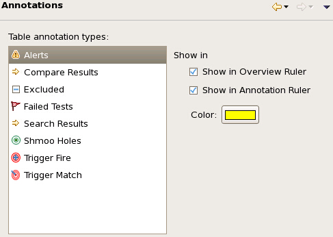

Annotations preference settings
The Annotations preference page lets you specify how failed tests, alerts you have defined, and other special conditions are indicated in the margins of summary and raw data views.

The list includes the available annotation types:
- Alerts: Alerts are highlights of cells meeting conditions that are specified in the Alerts preference page.
- Compare Results: Cells that have changed in relation to the baseline in the comparison mode of the Protocol Monitor view.
- Excluded: Excluded rows are:
- Rows in Detail data views that have been excluded (see Excluding data from evaluation for details).
- Rows in Data navigation views for which at least one row has been excluded in the detail data view.
- Failed Tests: In summary views, failed tests are test summaries where at least one of the individual test had a fail result. In raw data views, failed tests are tests with a fail result.
- Search Results: Rows containing found cells, that is, cells that match the search condition specified for the view.
- Shmoo Holes: Shmoo holes are failed (red) areas surrounded entirely
by passed (green) areas or passed areas surrounded entirely by failed areas.
Which types of shmoo holes are indicated is set in the shmoo preferences.
- Trigger Fire: Rows in the Protocol Monitor view that caused the trigger condition specified in the test to fire, that is, the first executed trigger match.
- Trigger Match: Rows in the Protocol Monitor view that match the trigger condition specified in the test.
If one of the annotation types is selected in the list, is settings are displayed to the right:
- Show in Overview Ruler: If this option is checked, a colored rectangle (with the color specified by the Color setting, see below) is displayed to the right of the scrollbar in the summary and raw data views for any row that has this type of annotation. (Clicking on the rectangle scrolls to the corresponding row.)
- Show in Annotation Ruler: If this option is checked, the icon for the annotation type is displayed to the right of any row in the summary and raw data views that has this type of annotation.
- Color: The color for the rectangle shown to the right of the view (see Show in Overview Ruler, above). Clicking the color swatch displays a color picker.
Functional changes
- Introduced in SmarTest 7.2.0
- SmarTest 7.2.1: Added annotations for excluded rows and shmoo holes.
- SmarTest 7.3.2: Added annotations for comparison results, search results, trigger matches, and trigger fire.